.png)
[1900] ETF 주문종합
내 손 안의 포트폴리오
종목은 다양하게, 주문은 한 번에
ETF(상장지수펀드)는 특정 지수를 추종하도록 설계된 펀드로, 거래소에 상장되어 주식처럼 자유롭게 매매할 수 있습니다. ETF 한 주를 매수하면 지수에 포함된 다양한 종목에 동시에 투자하는 효과를 얻을 수 있어 분산투자가 가능하다는 점이 큰 장점입니다.
일반 주식 주문 화면에서도 ETF 거래가 가능하지만, LS증권 HTS 투혼에는 ETF만을 위한 특별한 주문 화면이 마련되어 있다는 사실, 알고 계셨나요?
[1900] ETF 주문종합 화면에서는 시세, 기초지수, 구성종목, 차트 등 종목 정보를 한눈에 확인할 수 있고 주문 화면으로 즉시 연결하여 매매를 진행할 수 있으며 주문 내역과 계좌 잔고까지 관리할 수 있어 ETF 거래에 최적화된 환경을 제공합니다.
모든 과정이 유기적으로 연결되는
이 화면이 ETF에 특화된 이유!
| 화면 | 설명 |
|---|---|
| 다양한 ETF 시세 제공 | 현재가 / 지수선물 호가, 차트, 뉴스 등 다방면의 ETF 시세 정보 조회 가능 |
| 신속한 ETF 정보 조회 | 주요 종목 바로가기, ETF그룹 순위 등 ETF 종목만을 위한 조회 기능 지원 |
| 화면 전환 최소화 | 매매 타이밍을 놓치지 않도록 이동 없이 단일 화면에서 여러 기능 처리 |
여러 기능을 하나로, 화면은 간단하게
01기본 화면 구성
LS증권의 [1900] ETF주문종합 화면은 시세 정보와 종목 상세 정보부터 주문을 포함해 주문내역 및 잔고 조회에 이르기까지 ETF 주문에 필요한 기능들을 동시에 이용할 수 있도록 구성되어 있습니다.
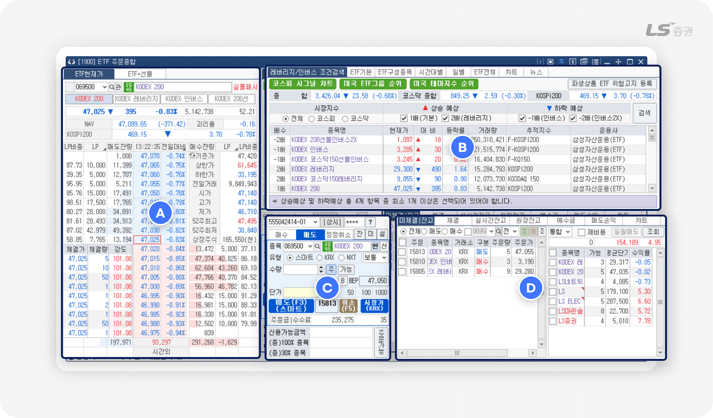
화면은 다음과 같이 4개의 영역으로 나누어집니다.
| 번호 | 영역 | 주요기능 |
|---|---|---|
| A | 호가 / 체결 정보 | 선택한 종목의 매수/매도 호가 및 체결량 등의 정보를 확인할 수 있습니다. |
| B | 종목 정보 | 종목 시세, 차트, 뉴스, 잔고 등 다양한 현황을 파악할 수 있습니다. |
| C | 주문 실행 | 매수/매도/정정/취소 주문을 접수할 수 있습니다. |
| D | 계좌 / 주문 관리 | 계좌 상태와 주문 현황을 조회하고 주문을 정정/취소할 수 있습니다. |
변화를 놓치지 않고, 실시간으로 읽다
02호가 / 체결 정보 (A영역)
호가 및 체결 정보 조회
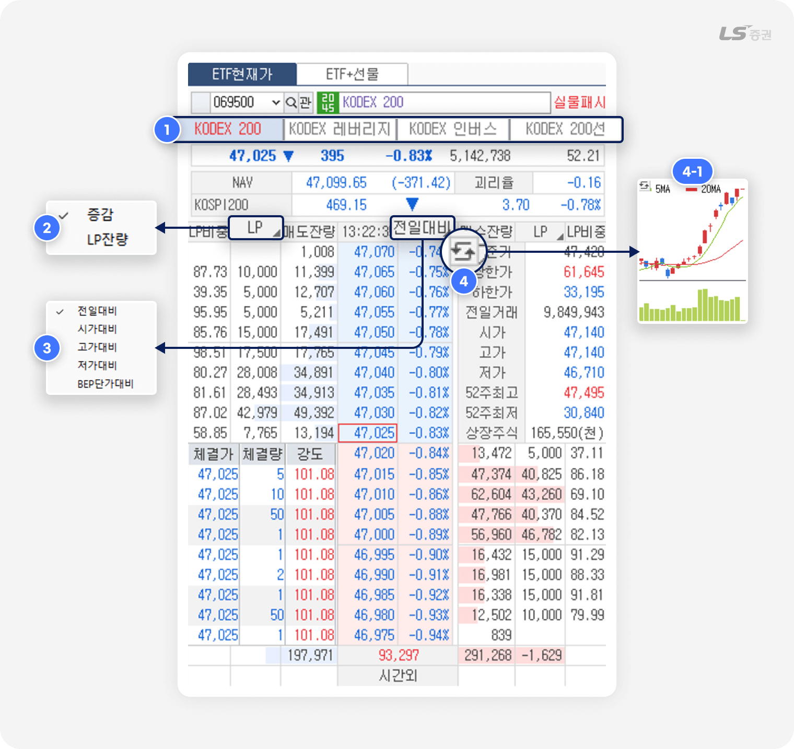
-
1
주요 종목 바로가기 버튼 클릭 시 해당 종목 정보가 호가창과 주문창에 즉시 조회됩니다.
-
2
클릭 시 호가창에 표시되는 증감 및 LP잔량 항목을 전환할 수 있습니다.
-
3
클릭 시 전일대비, 시가대비, 고가대비, 저가대비, BEP단가대비 중 조회할 항목을 선택할 수 있습니다.
-
4
전환 버튼으로 시세 정보 영역(4-1번)을 차트, 중간가 등으로 전환할 수 있습니다.
NAV와 괴리율
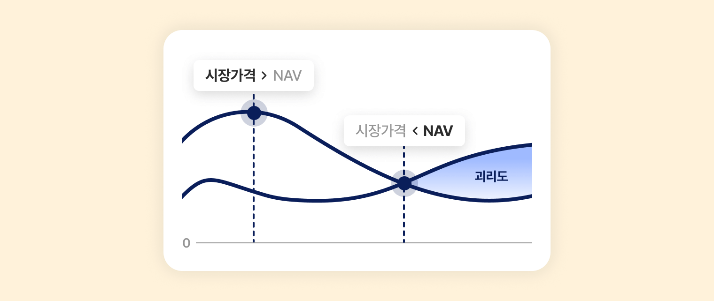
-
NAV(Net Asset Value)는 매일 장 종료 후 주식, 현금, 배당, 이자소득 등을 포함한 기초 자산들의 종가를 기반으로 계산한 ETF의 순자산가치를 의미합니다.
해외 ETF의 경우 국내 ETF 거래 시간과 대상 종목이 상이하여, 장중 조회되는 NAV는 실시간 데이터가 아닌 전일종가 기준인 점 유의해 주세요. -
괴리율은 ETF의 시장가격이 NAV와 차이가 나는 정도를 나타내는 지표입니다.
괴리율이 +면 고평가, -면 저평가로 해석하되, 유동성 / 해외시장 거래 시간 / 환율 등의 요인으로 인해 일시적으로 발생할 수 있습니다.
따라서 괴리율은 매수 · 매도의 근거가 아니라 참고 지표로 활용하는 것이 바람직합니다.
또 괴리율의 수치가 클수록 본래 가치와의 차이가 크다는 뜻이므로 거래 시 신중하게 접근해야 합니다.
ETF 현재가 ↔ ETF+선물 호가창 전환
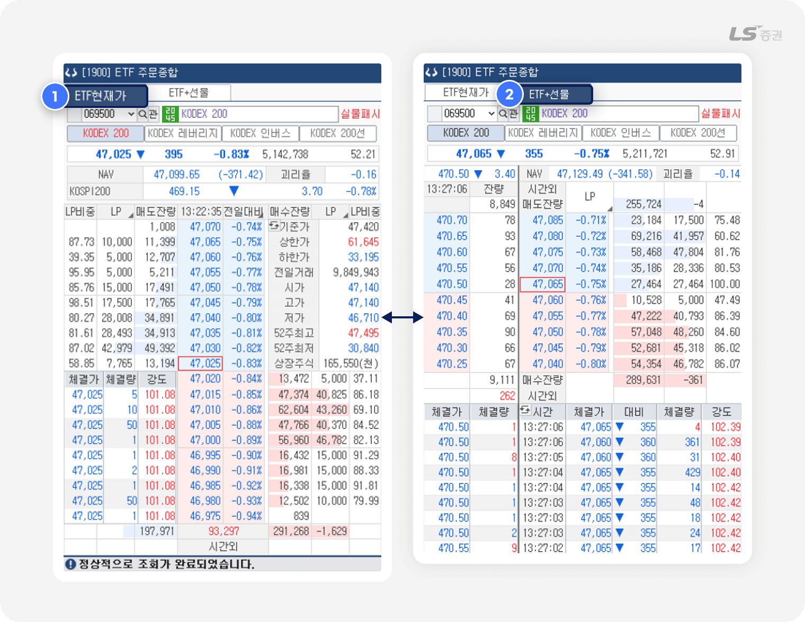
-
1
'ETF현재가' 탭에서는 ETF 현재가 호가, 시세 및 LP정보를 조회할 수 있습니다.
-
2
'ETF+선물' 탭에서는 ETF 5호가와 선물 근월물 5호가를 동시에 조회할 수 있습니다.
호가창 설정으로 가독성을 높이는 방법
- 편리한기능 - 설정 - 종합환경설정 - 주식호가 메뉴에서 호가창 표시 방법을 설정할 수 있습니다.
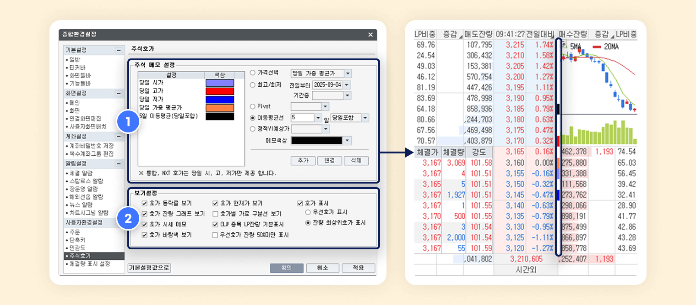
-
1
주식 메모 설정
- 현재가 당일 시가, 고가 등 요건에 해당하는 호가 우측에 지정 색상을 표시합니다.
- 요건 및 색상을 직접 추가, 변경, 삭제할 수 있습니다.
- 설정한 메모는 다른 호가창의 주식 메모에도 공통으로 적용됩니다.
-
2
보기설정
- 호가 등락률 보기 : 호가 우측 등락률 표시 여부를 선택합니다.
- 호가 현재가 보기 : 현재가 주변에 테두리선 강조 여부를 선택합니다.
-
호가 표시:
우선호가 또는 잔량 최상위호가에 해당하는 호가와 등락률의 강조 표시 여부를 선택합니다.
- 호가잔량 그래프 보기 : 호가 잔량표시란에 막대그래프 표시 여부를 선택합니다.
- 호가별 가로 구분선 보기 : 호가와 잔량표시란에 가로선 표시 여부를 선택합니다.
- 호가 시세 메모 : (1번)에서 설정한 주식 메모 표시 여부를 선택합니다.
-
ELW 종목 LP잔량 기본표시 :
LP(유동성공급자, Liquidity Provider) 공급 물량의 강조 여부를 선택합니다.
- 호가 바탕색 보기 : 호가영역 색상을 단일 및 그라데이션(Gradient) 중 선택합니다.
-
우선호가 잔량 50%미만 표시 :
우선호가 잔량이 50%인 경우 잔량 테두리선 강조 여부를 선택합니다.
자금 관리도 손쉽게
03종목 정보 (B영역)
레버리지/인버스 조건검색 탭
레버리지 ETF, 인버스ETF 등 파생상품 ETF를 조건별로 검색할 수 있습니다.
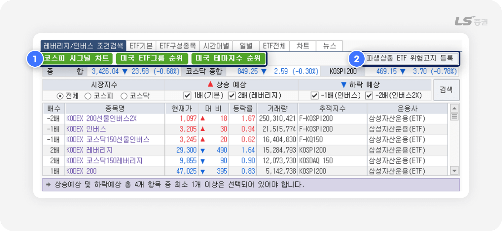
-
1
각 버튼 클릭 시 [3332] 코스피 시그널 차트, [1917] 미국 ETF그룹 등락률 순위, [3504] 해외지수순위 화면에서 ETF 종목 관련 지수 분석 정보를 확인할 수 있습니다.
-
2
클릭 시 [1907] 파생상품 ETF 위험고지 화면에서 파생상품 ETF를 거래하기 위한 위험고지를 확인하고 등록할 수 있습니다.
ETF 기본 탭
호가 / 체결 정보 (A영역)에서 선택한 종목의 기본 정보를 조회합니다.
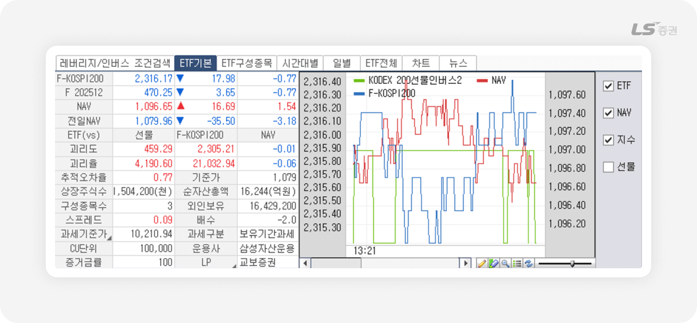
ETF 주요 용어 설명
-
추적오차율 :
ETF가 추적하는 지수와 실제 순자산가치(NAV) 수익률의 차이를 의미합니다.
수치가 낮을수록 운용사가 지수를 충실히 반영해 운용하고 있음을 뜻합니다. -
괴리율 :
ETF 시장가격이 추적지수와 얼마나 차이가 나는지를 보여주는 지표입니다.
-
스프레드 :
최우선 매도호가와 매수호가의 차이를 말합니다.
스프레드가 좁을수록 거래 비용이 줄고 매매 체결이 용이해 투자자에게 유리합니다.
스프레드가 1%(해외 3%)를 넘으면, 유동성공급자(LP)는 5분 이내에 1% 이내로 축소된 호가를 제시해야 합니다. 이 제도가 지켜지면 스프레드가 줄어들고, 간접적으로 시장가격과 NAV 차이(괴리율)도 줄어드는 효과가 있습니다. -
CU 단위 :
ETF에서 설정·해지가 이루어지는 최소 단위입니다.
보통 1CU는 수만 좌에서 수십만 좌로 구성됩니다.
ETF 구성종목 탭
선택한 ETF의 구성종목을 일자별로 추이를 확인하고, 비중 · 현재가 등 세부 항목을 조회하고 정렬할 수 있습니다.
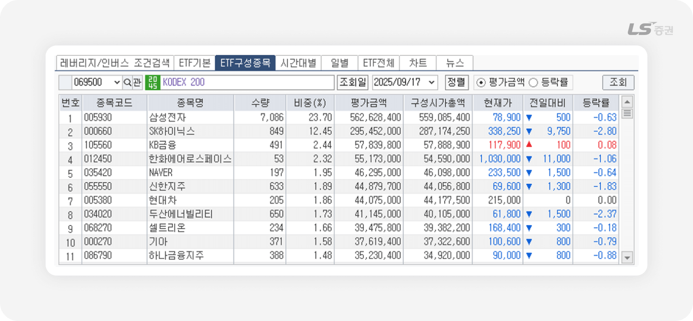
시간대/일별 탭
선택한 종목의 시간별/일별 시세 추이를 조회할 수 있습니다.
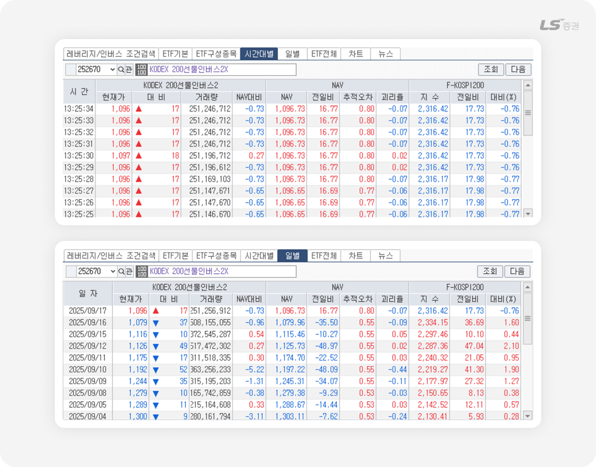
ETF 전체 탭
전체 ETF 목록 및 시세를 조건에 따라 조회하고 정렬할 수 있습니다.
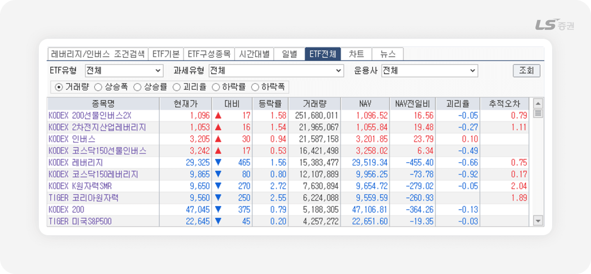
차트 / 뉴스 탭
선택한 종목의 차트 및 관련 뉴스를 조회할 수 있습니다.
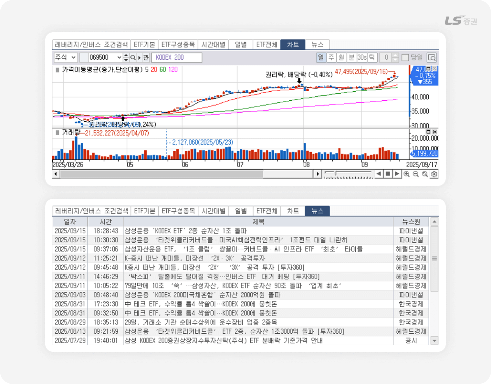
복잡함은 줄이고, 주문은 신속하게
04주문 실행 (C영역)
기본 주문 입력 기능
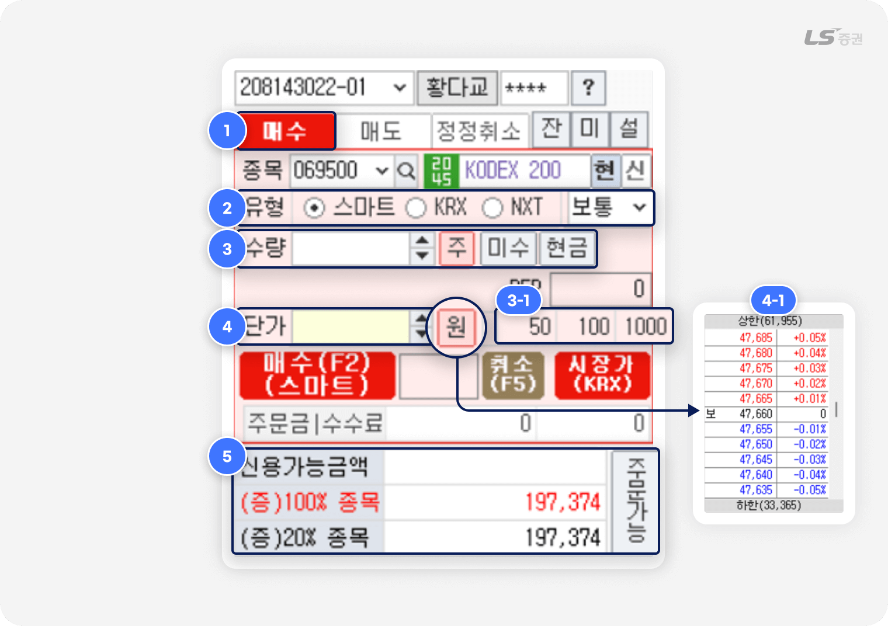
-
1
주문 버튼 및 연동 기능
- 매수/매도/정정취소 버튼이 나란히 배치되어 있으며, 입력한 조건에 따라 즉시 주문을 실행할 수 있습니다.
- 우측의 잔(잔고), 미(미체결), 설(설정) 버튼을 통해 관련 기능 화면으로 빠르게 전환할 수 있습니다.
-
2
거래소 및 주문유형 선택
- 스마트 / KRX / NXT 중 주문하려는 거래소를 선택합니다.
- 스마트는 당사가 정한 최선집행기준(SOR)에 따라 KRX와 NXT 중 한 곳으로 주문을 제출합니다.
- 스마트주문시스템(SOR)에 대한 자세한 설명은 홈페이지에서 확인할 수 있습니다.
- 보통(지정가), 중간가 등 주문유형을 선택합니다.
-
3
주문 수량 입력
- 매수/매도 주식 수량을 직접 입력합니다.
-
자주 사용하는 수량 단위(3-1번)을 설정하면 클릭 한 번에 입력할 수 있습니다.
(예: 50과 100을 순서대로 클릭 시 150주 입력)
-
4
주문단가 입력
- ‘원’ 버튼 클릭 시 선택한 종목의 호가창(4-1번)에서 단가를 선택할 수 있습니다.
- 매도 주문인 경우, ‘B’버튼을 클릭하면 BEP단가 기준으로 계산된 주문단가가 자동으로 입력됩니다.
-
5
주문가능금액 조회
- '주문가능' 버튼 클릭 시 신용 주문가능금액, 증거금 100% 종목 기준 주문가능금액, 증거금 20% 종목 기준 주문가능금액을 표시합니다.
BEP 단가를 고려하며 거래하자
BEP란 손익분기점, 즉 수수료 · 세금 등 제비용을 포함해 손익이 0이 되는 기준 가격으로 투자 원금을 회수하는 손절 지점이나, 이익을 얻는 매도 목표가를 정하는 데 참고할 수 있어요.
주문 설정 기능
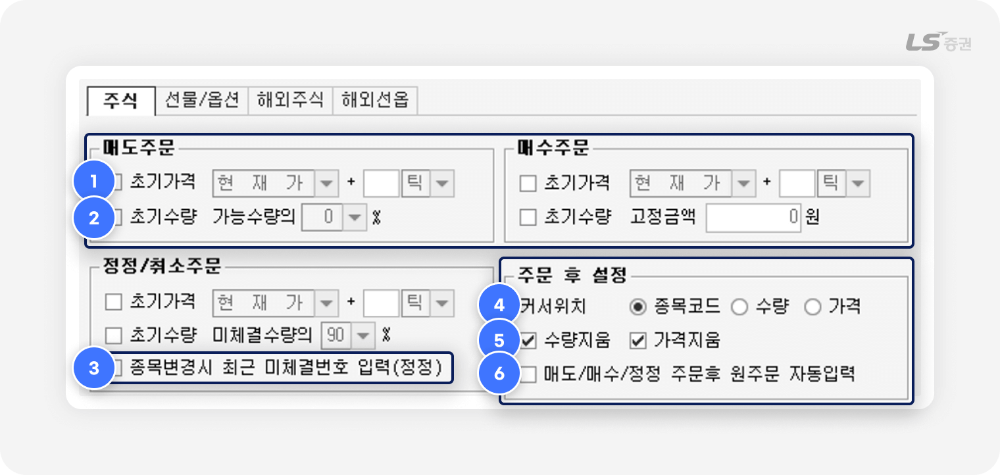
주문 전 자동 입력 설정
-
1
초기가격 :
체크 시 매도/매수/정정 주문 화면에서 주문단가에 초기 설정 가격이 자동 입력됩니다.
-
2
초기수량 :
체크 시 매도/매수/정정 주문 화면에서 주문수량에 초기 설정 수량이 자동 입력됩니다.
-
3
종목변경 시 최근 미체결번호 입력(정정) :
체크 시 정정/취소 주문 화면에서 직전 미체결 주문 번호를 자동 입력합니다.
주문 후 설정
-
4
커서위치 :
주문 후 커서가 이동할 곳을 지정합니다.
-
5
수량지움 / 가격지움 :
체크 시 주문 시 입력한 수량 또는 가격을 주문 실행 후 유지하지 않고 삭제합니다.
-
6
매도/매수/정정 주문후 원주문 자동입력 :
체크 시 정정/취소 주문 화면을 조회하면 최근 매도/매수/정정 주문 번호가 자동 입력됩니다.
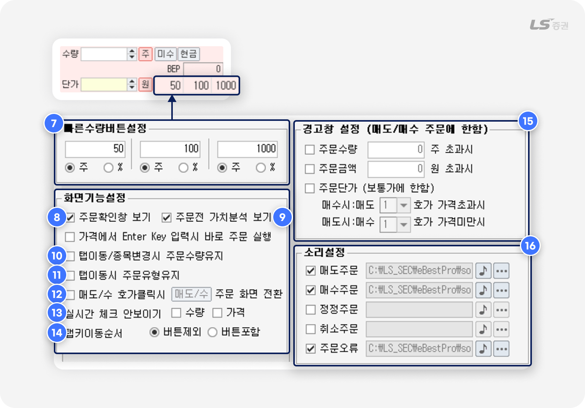
빠른 수량 버튼 설정
-
7
매도/매수 주문 화면에서 클릭으로 입력하는 주문수량 기준을 설정할 수 있습니다.
총 3개의 기준을 미리 설정할 수 있으며, 수량(주) 및 주문가능수량 대비 비율(%) 중 선택할 수 있습니다.
화면 기능 설정
-
8
주문확인창 보기 : 체크 시 착오주문 방지를 위해 주문 실행 전 확인창을 표시합니다.
-
9
주문전 가치분석 보기 :
체크 시 위험 종목을 선택한 경우 주문 화면이 노란색 배경으로 변경되고 경고 메시지를 표시합니다.
-
10
탭이동/종목변경시 주문수량유지 :
체크 후 종목을 변경하거나 탭 전환 시 입력한 주문수량을 유지합니다.
-
11
탭이동시 주문유형유지 :
체크 후 매도/매수 주문 화면 전환 시 선택한 거래소와 주문유형을 유지합니다.
-
12
매도/수 호가클릭시 주문 화면 전환 :
체크 시 클릭한 호가가 현재가보다 높으면 매도 주문 화면, 낮으면 매수 주문 화면으로 전환됩니다.
-
13
실시간 체크 안보이기 :
체크하면 초기가격(1번)과 초기수량(2번)에 체크하면 주문 화면에 표시되는 자동 체크박스를 숨깁니다.
-
14
탭키이동순서 :
체크 시 탭 키를 눌러 이동할 때 커서가 ‘주’ ‘가능’ 등 주요 버튼을 포함할지 여부를 선택합니다.
경고창 설정
-
15
매수/매도 주문 시 설정한 조건에 부합할 경우 주문 전 경고창을 표시해 주문 실수를 방지하도록 도와줍니다.
소리설정
-
16
주문 접수가 완료되거나 주문 오류 발생 시 소리로 알려주는 알림음을 설정할 수 있습니다.
자금 관리도 손쉽게
05계좌 / 주문 관리 (D영역)
계좌 / 주문 관리 탭
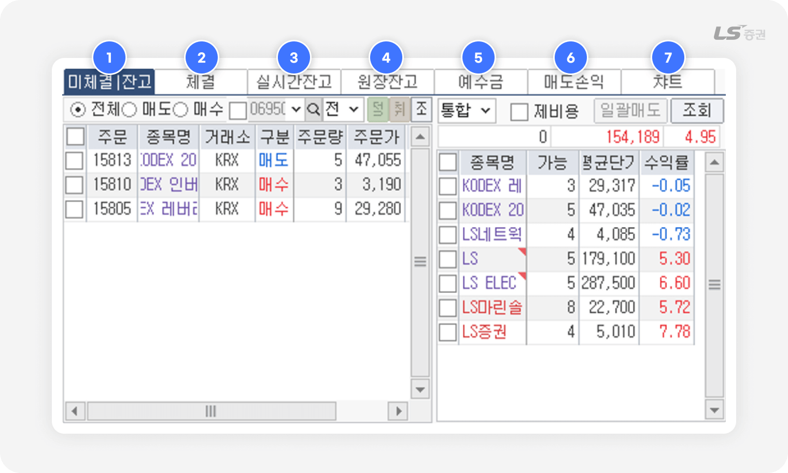
-
1
미체결 / 잔고
- 당일 접수한 주문 중 미체결 주문 내역 및 실시간 잔고를 동시에 조회할 수 있습니다.
- 미체결 종목 선택 시 일괄 정정 · 취소 화면으로 연결됩니다.
- 잔고 종목 선택 시 일괄 매도 화면으로 연결됩니다.
-
2
잔고
- 보유 종목 기준으로 매수평균단가, 손익분기점 단가(BEP) 등을 실시간으로 확인할 수 있습니다.
- 종목을 클릭하여 일괄매도 화면에서 빠르게 주문할 수 있습니다.
-
3
실시간잔고
- 선택 계좌의 보유 종목 현황을 실시간으로 조회할 수 있습니다.
- 종목을 클릭하여 일괄매도 화면에서 빠르게 주문할 수 있습니다.
-
4
원장잔고
- 선택 계좌의 보유 종목 현황을 조회할 수 있으며, 조회 버튼 클릭 시 잔고가 갱신됩니다.
- 제비용(수수료, 세금 등)은 포함되어 있지 않습니다.
- 종목을 클릭하여 일괄매도 화면에서 빠르게 주문할 수 있습니다.
-
5
예수금
- 보유 현금, 미수금, 증거금, 추정 인출 가능 금액을 확인할 수 있습니다.
- 은행 이체 화면과 연동되어, 입출금까지 한 화면에서 처리 가능합니다.
-
6
매도손익
-
일자별 실현손익과 수익률을 확인할 수 있습니다.
※ 단, 채권매매, 신용이자, 대출이자는 손익 계산에 포함되지 않으므로 해석 시 주의가 필요합니다.
-
일자별 실현손익과 수익률을 확인할 수 있습니다.
-
7
차트
- 해당 종목의 차트를 조회할 수 있습니다.
지금까지 LS증권 투혼 HTS [1900] ETF 주문종합 화면의 다양한 기능과 설정 방법을 살펴보았습니다. 감사합니다!
함께 보면 좋은 화면들, 유용한 팁까지 놓치지 마세요
기타 ETF 주요 화면 소개
| 항목 | 설명 |
|---|---|
| [1901] ETF 현재가 | 선택 종목의 호가 및 시세 정보, 체결 정보 등을 상세하게 확인할 수 있습니다. |
| [1902] ETF 시간별추이 | 선택 종목의 실시간 틱 발생 내역 및 NAV(순자산가치) 추이를 조회할 수 있습니다. |
| [1903] ETF 일별추이 | 선택 종목에 대한 일별 주가추이를 조회할 수 있습니다. |
| [1904] ETF 구성종목 | 선택 종목을 구성하는 전체 종목 및 상세 정보를 기준일에 따라 확인할 수 있습니다. |
| [1913] ETF 전체시세 | 전체 ETF 종목의 시세를 제공합니다. |
| [1914] ETF 조건검색 | NAV, 괴리율, 추적오차 등 상세 조건을 설정해 ETF 종목을 검색할 수 있습니다. |
| [1915] ETF 투자별 연속매매 | 최근 5영업일 이내 투자주체별 ETF 종목의 순매수 · 순매도 내역을 조회할 수 있습니다. |